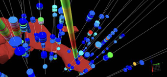

Dragging Exploration into the Quantum Age: using Atomic Dielectric Resonance technology to classify sites in the North Atlantic Craton
Atomic Dielectric Resonance (ADR) is a patented investigative technique (Stove, 2005) which involves the measurement and interpretation of resonant energy responses of natural or synthetic materials to the interaction of pulsed electromagnetic radio-waves from materials which permit the applied energy to pass through the material. The resonant energy response can be measured in terms of energy, frequency and phase relationships. The precision with which the process can be measured helps define the unique interactive atomic or molecular response behaviour of any specific material, according to the energy bandwidth used. ADR is measurable on a very wide range of hierarchical scales both in time and space. Time scales may range from seconds to femtoseconds, and spatial scales from metres to nanometres.
The technology has been applied to help mining and petroleum companies in their search for subsurface natural resources. In this contribution we wish to report on a series of surveys that were conducted by Adrok for Mining clients in the North Atlantic Craton region:
- Work in Canada for a Canadian Major led to observations of good correlation of Adrok’s ADR results versus drilled boreholes for high-conductivity targets in a nickel exploration setting.
- n Ireland, for a Canadian Major, Adrok explored for zinc and showed promising capabilities for defining rock types and layers as well as zones of mineralization.
- Platinum pathfinders have also been identified using ADR at great depth (up to 1000m) as well as finding evidence of faults. This work was conducted for a London Stock Exchange listed client.
- In Nova Scotia, preliminary work at Orex gold sites are showing good results of subsurface mineralization. Adrok used the same ADR techniques employed on their successful gold exploration site in Queensland, Australia, for Citigold Corporation (which was an analogous gold reef system).